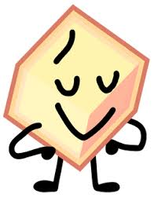
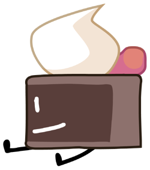

Battle for Dream Island is a web-series created by jacknjellify on YouTube. It revolves around a bunch of anthropomorphic objects who are competing in a competition to win the grand prize of Dream Island, a luxurious island. (from the unofficial bfdi wiki)
| Who are they? | When did they debut and when did they get eliminated? | What makes them, them? |
|---|---|---|
|  | He first debuted/showed up on the seventh episode of the first season, "Puzzling Mysteries". He got eliminated twice, those episodes being the seventh episode and the twenty-first episode of the fourth season. | He is canonically very popular, being known by all beings, including people outside of Earth. He was the team leader for "The Losers" and also led his other team, "Have Nots" during the seventeenth and eighteenth episode of the fourth season. |
| Similarly to Loser, they debuted in the seventh episode of the first season, appearing alongside Loser. As of October 29, 2024, they have not been eliminated yet. | On the contrary to Loser, they are known for being fairly disliked by other objects and beings, however the reason is yet to be revealed. They weren't a leader either, however they are a very capable teammate, helping their teammates with climbing or building things. | |
|  | His appearance was on the eighth episode of the first season. He was first eliminated on the eighth episode, on the fifth season this time. | When he was first introduced as a constestant (not a debuter) on the fourth season, he was merely a follower of Loser, not providing much for his team. However, when the fifth season came around, his personality changed completely, no longer being a complete follower and instead is able to help his teammates on his other team "Just Not", before he got eliminated. |